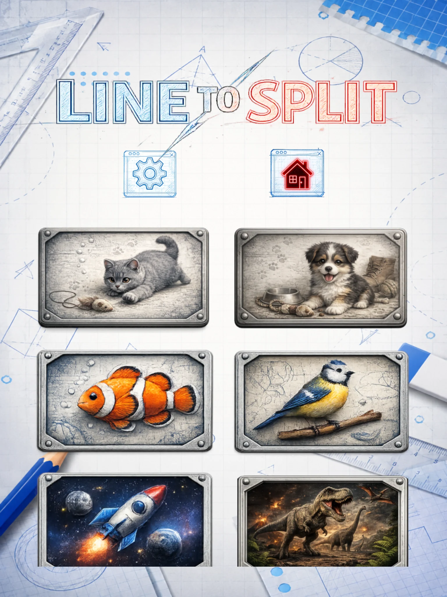
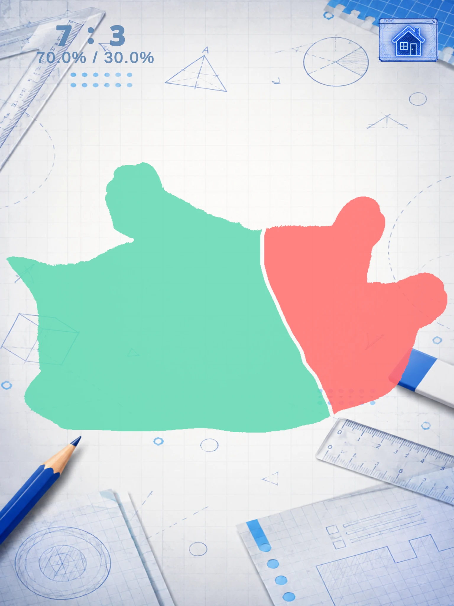
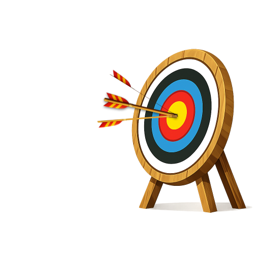
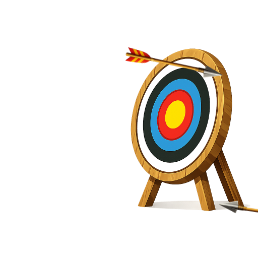
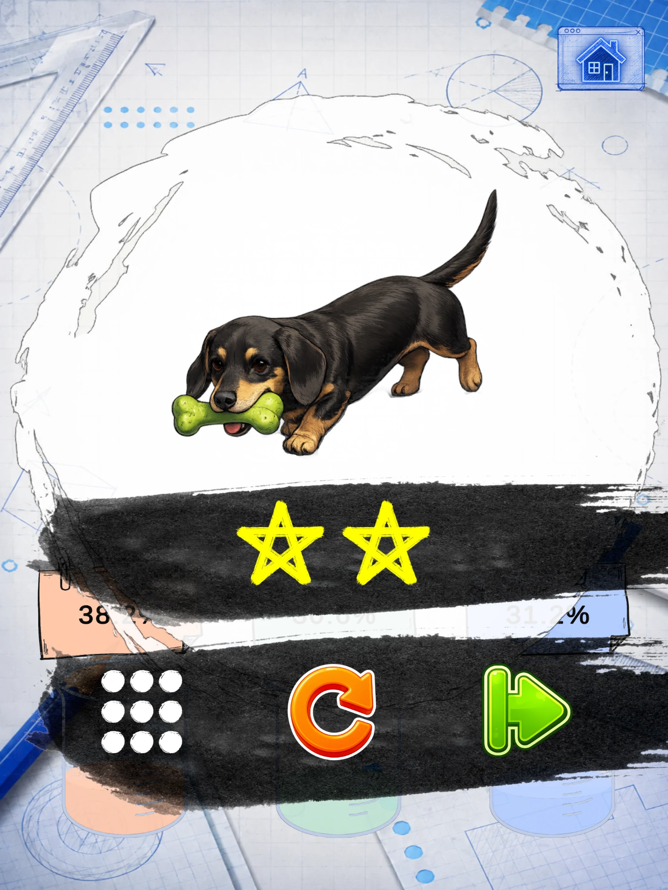
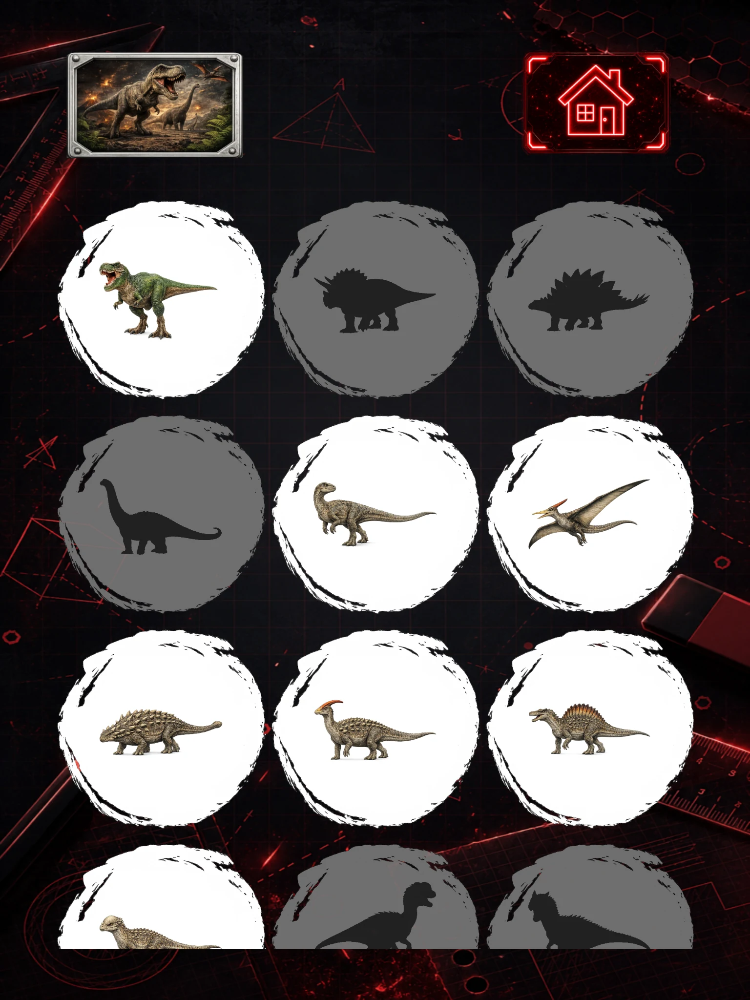
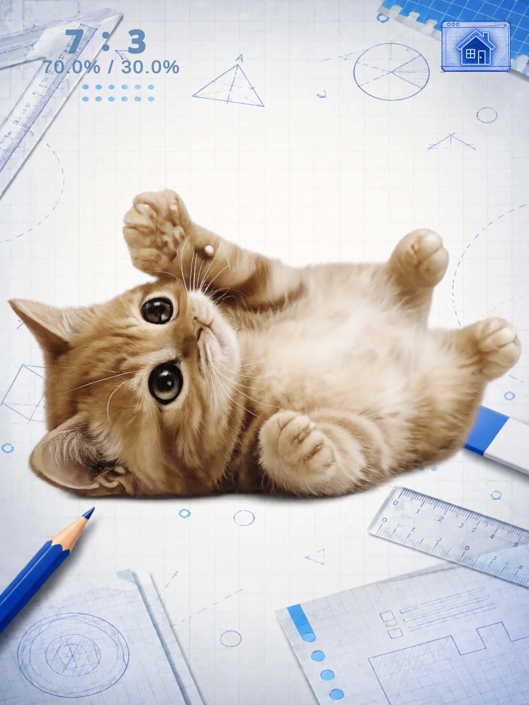
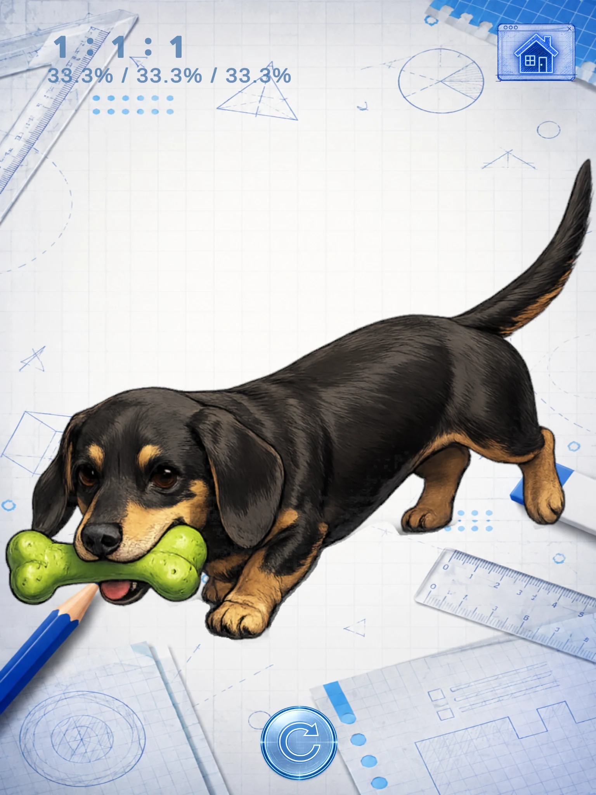

01
Choose a theme
Start with a theme you like. Explore dogs, cats, fish, birds, space, dinosaurs, instruments, tools, letters and numbers, and more.

A shape-splitting puzzle game
Draw the line.
Match the ratio.
Choose a theme you like, draw a line across each silhouette, and split it as close as you can to the target ratio.
Free to download on iOS and Android. Contains ads.

Start with a theme you like. Explore dogs, cats, fish, birds, space, dinosaurs, instruments, tools, letters and numbers, and more.

When the image turns into a silhouette, draw a line and split the shape as close as you can to the target ratio.
Check your result right away. See how close your split is to the target. If it’s too far off, try again.

Normal Mode
Choose a theme you like and work through three split challenges.
Start by splitting the silhouette into two equal parts.

Take on an uneven split and get a feel for how much of the shape each part should take.
Split the silhouette into three equal parts. Use the split you made in Stage 2 as a guide.


Hit the mark with a Robin Hood shot.

Hit the target and move on.

Miss the target? Take another shot.

Challenge Mode
Earn 2 or more stars on a stage in Normal Mode to unlock its Challenge Mode.
Split the silhouette into a randomly given two-part ratio.
Take on a randomly given three-part ratio and see how close you can get.
No fixed ratios to memorize.
Trust your own sense of area.
Challenge Mode brings a darker look and a different soundtrack.

Choose a theme, draw your split, and see how close you can get.



Swipe or use the arrows. Select a screenshot to enlarge it.
Start with the themes you like — from animals and space to dinosaurs, instruments, tools, letters and numbers, and more.
Look at the shape, judge the area, and see how closely you can match the target ratio.
Simple visual cues, ratios, and intuitive controls let you focus on the puzzle.
Choose a theme, wait for the image to turn into a silhouette, then draw a line to split it as close as you can to the target ratio.
You can try again and adjust your split.
Normal Mode has three stages: 1:1, 6:4 or 7:3, and 1:1:1. Complete all three stages to earn 1 to 3 stars.
Earn 2 or more stars on a stage in Normal Mode to unlock its Challenge Mode. Switch modes manually from the game’s home screen.
Challenge Mode has two stages with random target ratios: a two-way split followed by a three-way split. It’s a chance to test your own sense of area.

Pick a shape, trust your eye, and see how close you can get.
Free to download on iOS and Android. Contains ads.